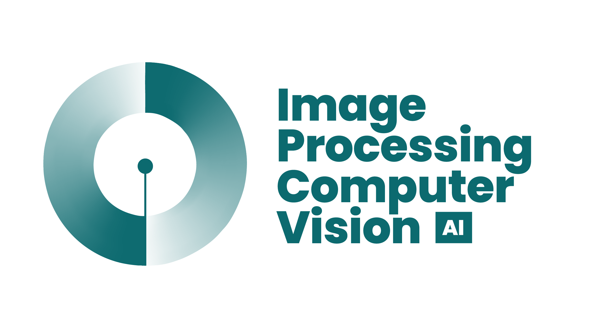

MSc in AI for Image Processing and Computer Vision (IPCV-AI)
Awarded the highly competitive EMJM full scholarship to join this prestigious program, delivered by a consortium of three leading European universities.